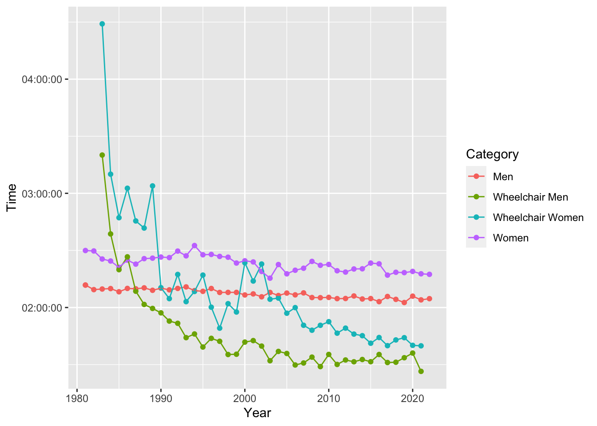
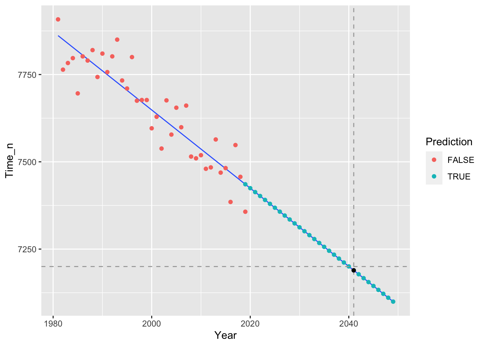

library(tidytuesdayR)
library(tidyverse)
library(lubridate)Reflections
- Initially, this wasn’t a dataset where a plot leaped out at me. This is a not really a good dataset for linear regression, but I wanted to explore a real world application of prediction using linear regression and practice making a visualisation.
- I ran into an interesting limitation in
stats::lm()trying to construct a linear model. This function doesn’t work with the difftime data type. I worked around this by converting the difftime into a numeric data type and then converting it back to a datetime type after the model was constructed. This did limit how I could plot the Some older Stack Overflow posts confirmed this is a valid (if awkward) approach. - It took a lot of time and wrangling to get the plot looking not great. I’m hoping this will improve over time!
Analysis
Setup Environment
As a step towards reproducibility, I use an RStudio project and the renv package tools.
Data
This week’s dataset is about the London Marathon and has been scraped from Wikipedia.
tuesdata <- tidytuesdayR::tt_load('2023-04-25')
Downloading file 1 of 2: `winners.csv`
Downloading file 2 of 2: `london_marathon.csv`winners <- tuesdata$winners
london_marathon <- tuesdata$london_marathon
rm(tuesdata)The london_marathon data frame contains information about the race itself, including when it was held, competitors and fundraising.
The winners data frame contains information about the race winners in various categories.
Exploratory data analysis
winners %>%
right_join(london_marathon, by = 'Year')# A tibble: 163 × 12
Category Year Athlete Nationality Time Date Applicants Accepted
<chr> <dbl> <chr> <chr> <time> <date> <dbl> <dbl>
1 Men 1981 Dick Bear… United Sta… 02:11:48 1981-03-29 20000 7747
2 Men 1981 Inge Simo… Norway 02:11:48 1981-03-29 20000 7747
3 Men 1982 Hugh Jones United Kin… 02:09:24 1982-05-09 90000 18059
4 Men 1983 Mike Grat… United Kin… 02:09:43 1983-04-17 60000 19735
5 Men 1984 Charlie S… United Kin… 02:09:57 1984-05-13 70000 21142
6 Men 1985 Steve Jon… United Kin… 02:08:16 1985-04-21 83000 22274
7 Men 1986 Toshihiko… Japan 02:10:02 1986-04-20 80000 25566
8 Men 1987 Hiromi Ta… Japan 02:09:50 1987-05-10 80000 28364
9 Men 1988 Henrik Jø… Denmark 02:10:20 1988-04-17 73000 29979
10 Men 1989 Douglas W… Kenya 02:09:03 1989-04-23 72000 31772
# ℹ 153 more rows
# ℹ 4 more variables: Starters <dbl>, Finishers <dbl>, Raised <dbl>,
# `Official charity` <chr>To start, a quick visualization of the data set.
winners %>%
ggplot(aes(x = Year, y = Time, color = Category)) +
geom_point() +
geom_line()
On a quick look, a couple of ideas for possible visualisations occurred to me:
- How have winners’ finishing times changed over time? (Decreased, significantly, based on my initial plot.)
- How have entrance success rates and completion rates changed over time? (Probably got harder to enter, so those that get to the start line are emore likely to complete.)
Neither of these grabbed my imagination, so I visited the London Marathon Wikipedia page for some inspiration. A few clicks later and I was reading about the quest for a sub-two hour marathon, which got me thinking ... based on these data, when can we expect the magic 2:00 hr mark to be broken at the London Marathon?
Analysis
Research question: Based on these data, when can we expect the magic 2:00 hr mark to be broken at the London Marathon?
This gave me a chance to practice linear regression, which I’ve been learning with Datacamp.
My aim is to create a model that reflects the relationship between finish times (Time, response variable) over time (Year, explanatory variable), and use that model to estimate the explanatory variable (Year) at an expected future value for the response variable (Time < 2 hours).
This is a pretty flimsy model and very small dataset, so the result is a nonsense, but it might look interesting when visualised.
First, some data wrangling to ensure we can create a model from the data set.
Some assumptions that have informed this:
The men’s times are (on average) faster than the women’s times, so only fit the model to the men’s data.
Trim out the data after 2020, which is less consistent.
winners %>%
filter((Category == "Men") & (Year < 2020)) %>%
select(Year, Time) %>%
mutate(
Year = Year - min(Year), # re-base, so first year is year 0
Time_n = as.numeric(Time) # can't create a linear model with a difftime variable (Time),
# so create a new column with difftime converted to numeric (Time_n)
) %>%
distinct(Year, Time, Time_n) -> mens_winnersNow to create a linear model for the impact of each Year on the winner’s finishing Time.
lm(Time_n ~ Year, data = mens_winners) -> mens_mdlIf this were a proper model, I should assess the fit of the mens_mdl to the data.
summary(mens_mdl)
Call:
lm(formula = Time_n ~ Year, data = mens_winners)
Residuals:
Min 1Q Median 3Q Max
-120.710 -34.337 -3.503 41.687 122.941
Coefficients:
Estimate Std. Error t value Pr(>|t|)
(Intercept) 7861.5346 18.1939 432.1 < 2e-16 ***
Year -11.2063 0.8239 -13.6 5.7e-16 ***
---
Signif. codes: 0 '***' 0.001 '**' 0.01 '*' 0.05 '.' 0.1 ' ' 1
Residual standard error: 57.91 on 37 degrees of freedom
Multiple R-squared: 0.8333, Adjusted R-squared: 0.8288
F-statistic: 185 on 1 and 37 DF, p-value: 5.703e-16Unsurprisingly, this brief summary suggests the significance of this model is basically 0. So, not at all helpful for meaningful prediction. Nevertheless, we can now use the mens_mdl to predict in which year the men’s winner’s time will be less than two hours.
target_Time <- 2 * 60 * 60 # Target time of 2 hours, in seconds, for computation
first_Year <- min(winners$Year)
# A tibble with a row for each Year for which we want to predict.
explanatory_data <- tibble(Year = max(mens_winners$Year):(max(mens_winners$Year) + 30)) # An estimate
# Use the model to predict values for each row in the explanatory_data tibble.
explanatory_data %>%
mutate(Time_n = predict(mens_mdl, explanatory_data),
Prediction = TRUE) -> prediction_data
# Filter the predicted results to find the first Year with a finish time less than the target time.
prediction_data %>%
filter(Time_n < target_Time) %>%
slice_head(n = 1) %>%
pull(Year) + first_Year -> tipping_Year # re-bases to use human years (eg. 2041)And, so, to answer our research question: based on these data, we expect the magic 2:00 hr mark to be broken at the London Marathon in 2041.
Visualization
And now, to combine the original data, the predicted data points from the model line and highlight the target time.
# Prepare the data for plotting
mens_winners %>%
select(-Time) %>%
mutate(Prediction = FALSE) %>%
rbind(prediction_data) %>%
mutate(Time_duration = dseconds(Time_n),
Year = Year + first_Year) -> plotting_data
plotting_data %>%
filter(Year == tipping_Year) -> tipping_pointAnd finally, the plot:
ggplot(data = plotting_data, aes(x = Year, y = Time_n)) +
geom_smooth(method = "lm", se = FALSE, linewidth = 0.5, alpha = 0.9) +
geom_point(aes(color = Prediction)) +
geom_hline(aes(yintercept = target_Time), linetype = "dashed", color = "darkgrey") +
geom_vline(aes(xintercept = tipping_Year), linetype = "dashed", color = "darkgrey") +
geom_point(data = tipping_point, color = "black")
Appendices
Session Info
R version 4.3.1 (2023-06-16)
Platform: x86_64-apple-darwin20 (64-bit)
Running under: macOS Ventura 13.5.2
Matrix products: default
BLAS: /Library/Frameworks/R.framework/Versions/4.3-x86_64/Resources/lib/libRblas.0.dylib
LAPACK: /Library/Frameworks/R.framework/Versions/4.3-x86_64/Resources/lib/libRlapack.dylib; LAPACK version 3.11.0
locale:
[1] en_US.UTF-8/en_US.UTF-8/en_US.UTF-8/C/en_US.UTF-8/en_US.UTF-8
time zone: Australia/Sydney
tzcode source: internal
attached base packages:
[1] stats graphics grDevices datasets utils methods base
other attached packages:
[1] lubridate_1.9.2 forcats_1.0.0 stringr_1.5.0 dplyr_1.1.2
[5] purrr_1.0.2 readr_2.1.4 tidyr_1.3.0 tibble_3.2.1
[9] ggplot2_3.4.3 tidyverse_2.0.0 tidytuesdayR_1.0.2
loaded via a namespace (and not attached):
[1] utf8_1.2.3 generics_0.1.3 renv_1.0.0 xml2_1.3.5
[5] lattice_0.21-8 stringi_1.7.12 hms_1.1.3 digest_0.6.33
[9] magrittr_2.0.3 evaluate_0.21 grid_4.3.1 timechange_0.2.0
[13] fastmap_1.1.1 Matrix_1.5-4.1 cellranger_1.1.0 jsonlite_1.8.7
[17] mgcv_1.8-42 httr_1.4.7 rvest_1.0.3 fansi_1.0.4
[21] scales_1.2.1 cli_3.6.1 crayon_1.5.2 rlang_1.1.1
[25] splines_4.3.1 munsell_0.5.0 withr_2.5.0 yaml_2.3.7
[29] tools_4.3.1 tzdb_0.4.0 colorspace_2.1-0 curl_5.0.2
[33] vctrs_0.6.3 R6_2.5.1 lifecycle_1.0.3 fs_1.6.2
[37] usethis_2.2.2 pkgconfig_2.0.3 pillar_1.9.0 gtable_0.3.3
[41] glue_1.6.2 xfun_0.39 tidyselect_1.2.0 rstudioapi_0.15.0
[45] knitr_1.43 farver_2.1.1 nlme_3.1-162 htmltools_0.5.5
[49] labeling_0.4.2 rmarkdown_2.23 compiler_4.3.1 readxl_1.4.3 Changelog
2023-09-26 1.0 Initial version.